![Metaintron equal-shape read analysis. Dataset/universe: Supported introns>=100nt;separate per library; N=338659 eligible; supported per library NM2026_0081:17408, NM2026_0082:30033, NM2026_0083:18204, NM2026_0084:39555, NM2026_0085:18636, NM2026_0086:84858, NM2026_0087:18447, NM2026_0088:77315. Counted unit: Within-intron normalized bin-depth fraction. Weighting: Every supported intron total weight1;zeros excluded and reported. Normalization/denominator/y-axis: Normalize100-bin density to unit total per intron;average. Boundary spikes occur in CLIP and SMI, strongest in short introns.](figures/metaintron_equal_shape.png)
| Task | Original note | Status: before → after | Analysis performed | Main result | Key figure |
|---|---|---|---|---|---|
| 1A | Quantile normalize the16k | COMPLETE → COMPLETE | Audited source and saved output | CPM preceded QN; distinct from requested raw-count method | Reused/audited |
| 1B | On log2 counts;remake continuous plots | PARTIAL → COMPLETE | Completed new raw_count_quantile/; original retained | RawQN median−0.578;92.6% original sign agreement | Figure |
| 1C | Compare things to intron | PARTIAL → COMPLETE | Completed tables/region_vs_intron.tsv and effect/density/ECDF figures | 3UTR vs intron Cliff−0.120;small effect | Figure |
| 2 | Subsample down to324 reads (depth) | PARTIAL → COMPLETE | Completed read_sensitivities.R using all eligible BAM-record exports; no peak-level binomial approximation | 328-favoring regional medians in98–100% of50 draws | Figure |
| 3A | Annotate aligned reads | COMPLETE → COMPLETE | Reuse existing memberships; split unassigned reads by empty gene IDs | Existing CIGAR-block memberships reused | Reused/audited |
| 3B | Take this fractional approach | PARTIAL → COMPLETE | Completed fractional memberships and replicate-level table | Fractional memberships now sum to one per read | Figure |
| 4 | Make sure UAGs are enriched | NOT DONE → COMPLETE | Completed summit51nt sequences;200 dinucleotide shuffles; positional and zone enrichment | Central UAG2.15x over dinucleotide null | Figure |
| 5 | 0–1000 intron,both sides | PARTIAL → COMPLETE | Completed aligned-block intron-specific inward profiles with denominators | 170277 introns>=2kb;both ends increase inward | Figure |
| 6A | Normalize introns to bins | COMPLETE → COMPLETE | Reuse round2; add explicit length>=100 quartile sensitivity | Existing round2 baseline reused;length sensitivity added | Reused/audited |
| 6B | First10%,middle,last10%;length sensitivity | PARTIAL → COMPLETE | Completed summit density, length quartiles, equal-intron shape and read weighting, boundary tables/tests | First10% summit enrichment1.67x;read weighting separately checked | Figure |
| 7 | 3′UTR length-normalized endogenous density | PARTIAL → COMPLETE | Completed normalized summit positions;500 within-model null draws; histogram/ECDF and construct secondary plots; endogenous source provenance remains provisional | DistalUTR enrichment1.26x;endogenous provenance provisional | Figure |
| 8 | PARPIPE spatial/background scripts | NOT DONE → COMPLETE | Completed audit of pinned Spatial.pl, Spatial.R, annotate.pl; exact25nt-margin spatial randomization adapted; no old pipeline executed | Exact PARpipe margin randomization agrees in direction | Figure |
| 9 | Published RBP splice-pattern controls | NOT DONE → COMPLETE | Completed original doRiNA retrieval, hg38 conversion,500 nulls, proximity, profiles and interpretation | Weak MSI2 exact exon-side peak enrichment;controls differ | Figure |
| 10 | Integrate and compare methods | NOT DONE → COMPLETE | Completed this HTML, comparison table and registry extension | Report, reproducible tables and registry extension | Reused/audited |
Download audit · Method comparison · Existing registry + additions · Existing round-two plots
No exact existing analysis was rerun just to create another copy. Audit status describes what existed before this work; final status describes the completed follow-up. The supplied MSI2 peak BED is treated as the reference set. Its endogenous origin is provisional because the user believes it is endogenous but an accession/publication is unconfirmed. All results below remain interpretable as coordinate analyses of that explicitly named reference.
The original featureCounts matrix has43,794 fixed merged peaks;16,046 have any count across eight libraries. All three continuous normalization comparisons use those same16,046 IDs without directional filtering. The original score uses log2 ratios of mean CPM with a0.5 pseudocount. Existing QN applies full mapped-library CPM, log2(CPM+0.5), then preprocessCore quantile normalization. The new calculation instead uses log2(raw count+0.5), then QN directly across eight libraries. For QN, mean transformed CLIP minus mean transformed SMI defines each construct enrichment; delta-delta is324 minus328. Sparse tied values retain averaged reference ranks.
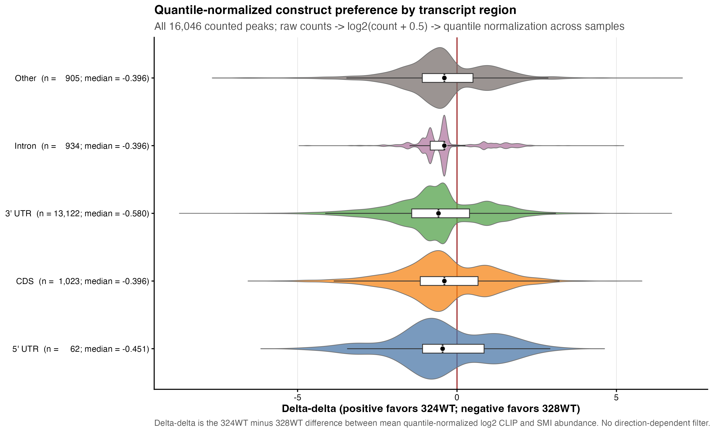
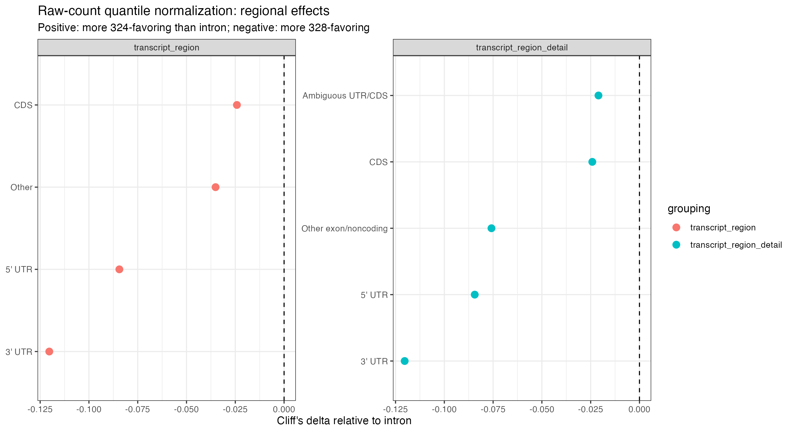
| grouping | region | n | n_intron | median | median_difference | cliffs_delta | q_BH | ks_D |
|---|---|---|---|---|---|---|---|---|
| transcript_region | 5' UTR | 62 | 934 | -0.451 | -0.05476 | -0.08441 | 0.3859 | 0.2127 |
| transcript_region | CDS | 1023 | 934 | -0.3962 | 0 | -0.02417 | 0.3961 | 0.1515 |
| transcript_region | 3' UTR | 1.312e+04 | 934 | -0.5805 | -0.1842 | -0.1203 | 3.217e-09 | 0.2006 |
| transcript_region | Other | 905 | 934 | -0.3962 | 0 | -0.03511 | 0.3859 | 0.1292 |
| transcript_region_detail | 5' UTR | 62 | 934 | -0.451 | -0.05476 | -0.08441 | 0.3859 | 0.2127 |
| transcript_region_detail | CDS | 1023 | 934 | -0.3962 | 0 | -0.02417 | 0.3961 | 0.1515 |
| transcript_region_detail | 3' UTR | 1.312e+04 | 934 | -0.5805 | -0.1842 | -0.1203 | 3.217e-09 | 0.2006 |
| transcript_region_detail | Ambiguous UTR/CDS | 619 | 934 | -0.3962 | 0 | -0.02101 | 0.4791 | 0.1522 |
| transcript_region_detail | Other exon/noncoding | 277 | 934 | -0.4733 | -0.07708 | -0.07584 | 0.1541 | 0.093 |
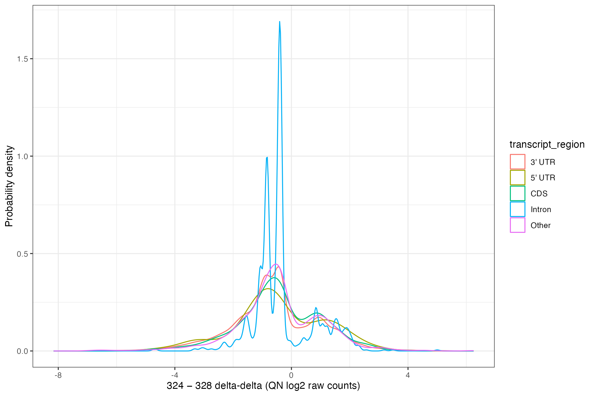
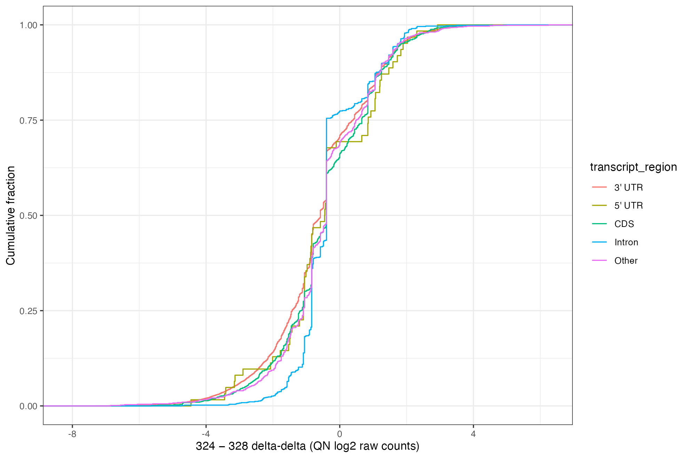
The relative3′UTR/intron effect survives but is small: median difference−0.184 and Cliff’s delta−0.120. CDS has the same median as intron after tied-rank normalization; its distribution can still differ in shape. MixedUTR/CDS has619 peaks and is included. The9 unassigned detailed-category peaks fail the prespecified minimum20 and are not individually tested.
We sampled whole eligible aligned records without replacement50 times (seed260921). CLIP is matched to the sparse324CLIP depth93,659. The smallest SMI library is328, so SMI is separately matched to257,457; deeper324SMI libraries are also reduced. Each replicate remains separate. Counts are reconstructed from round-two per-read memberships, which retain every overlapping peak; featureCounts did not use the multi-overlap -O option. The reconstructed full-depth baseline therefore differs slightly from the original matrix, and the saved QC table quantifies this. All16,046 fixed IDs remain supported at full depth. Resampling comparisons use that reconstructed full-depth baseline, holding its counting rule constant.
| sample_id | construct | assay | biological_replicate | original_depth | target_depth | iterations | seed |
|---|---|---|---|---|---|---|---|
| NM2026_0081 | 328 | CLIP | A | 1.481e+05 | 9.366e+04 | 50 | 2.609e+05 |
| NM2026_0082 | 328 | SMI | A | 2.575e+05 | 2.575e+05 | 50 | 2.609e+05 |
| NM2026_0083 | 328 | CLIP | B | 1.739e+05 | 9.366e+04 | 50 | 2.609e+05 |
| NM2026_0084 | 328 | SMI | B | 3.2e+05 | 2.575e+05 | 50 | 2.609e+05 |
| NM2026_0085 | 324 | CLIP | A | 9.366e+04 | 9.366e+04 | 50 | 2.609e+05 |
| NM2026_0086 | 324 | SMI | A | 5.713e+05 | 2.575e+05 | 50 | 2.609e+05 |
| NM2026_0087 | 324 | CLIP | B | 1.038e+05 | 9.366e+04 | 50 | 2.609e+05 |
| NM2026_0088 | 324 | SMI | B | 5.126e+05 | 2.575e+05 | 50 | 2.609e+05 |
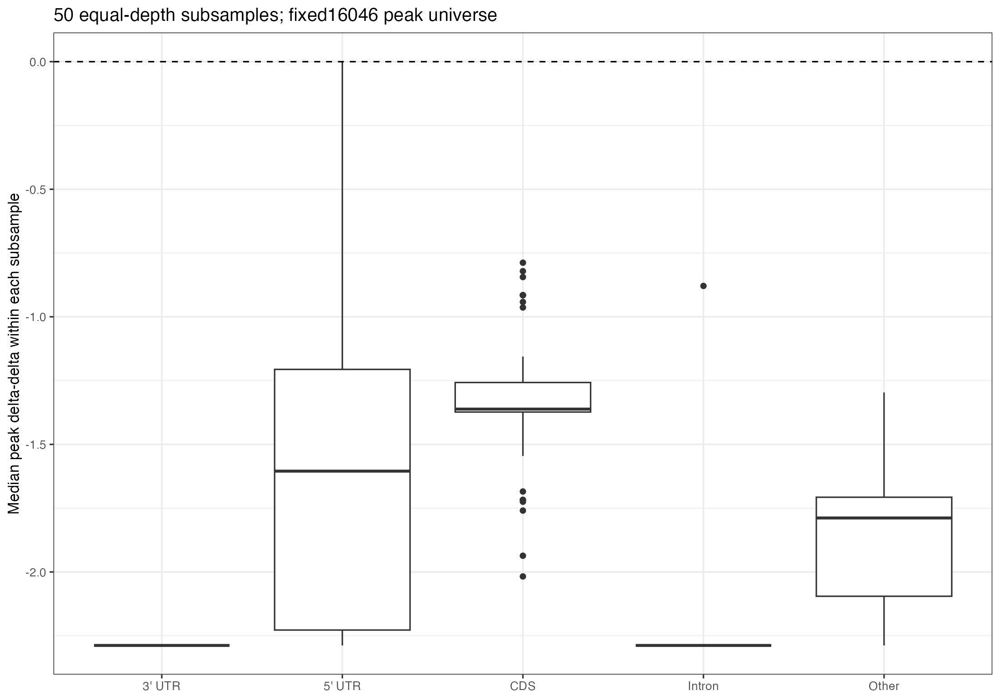
| region | median | low | high | fraction_negative |
|---|---|---|---|---|
| 3' UTR | -2.288 | -2.288 | -2.288 | 1 |
| Other | -1.788 | -2.239 | -1.373 | 1 |
| Intron | -2.288 | -2.288 | -2.288 | 1 |
| CDS | -1.362 | -1.897 | -0.8263 | 1 |
| 5' UTR | -1.605 | -2.288 | -0.2447 | 0.98 |
Counts are converted to CPM using the selected library depth before the established ratio-of-mean-CPM score. This removes unequal assay depth by random selection while preserving a common scale between CLIP and SMI. The draws are technical sensitivity iterations, not50 biological replicates. The repeated identical3′UTR/intron medians reflect sparse count ties; they are not evidence of zero uncertainty for all peaks. Per-peak intervals and direction-preservation fractions are saved.
The source BAMs are unavailable locally, but round two exported every eligible primary mapped alignment once, including position,strand,CIGAR and all overlapping categories. Those GENCODEv26 memberships already used alignedM/= /X blocks, excluding N and D; junction-spanning reads therefore do not cover the intervening intron. Reusing these exact annotations avoids another BAM pass. Each read receives1/k for each of its k distinct categories. Transcript ambiguity is not resolved to a single isoform. Empty-gene unassigned records are separated as intergenic; other annotated noncoding/internal exonic material remains other.
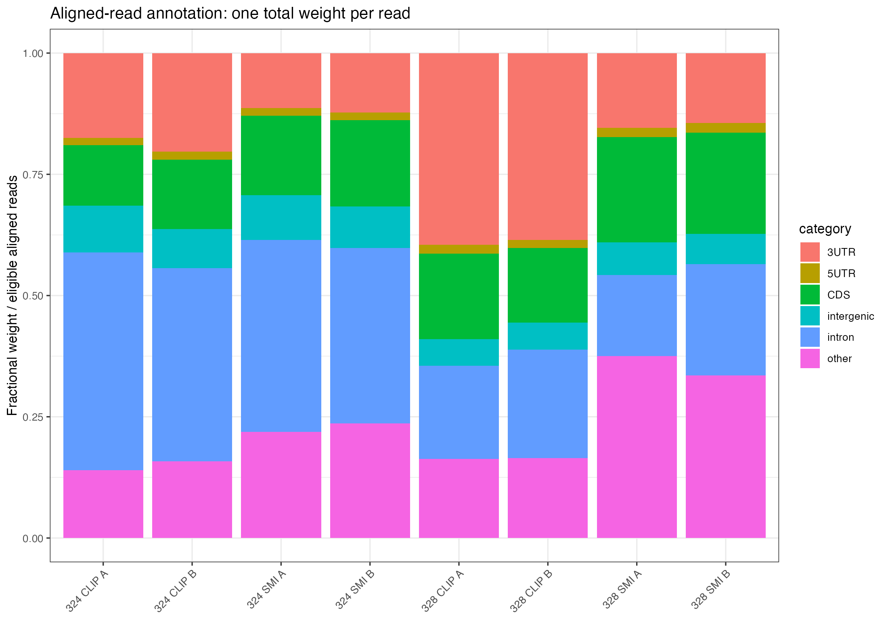
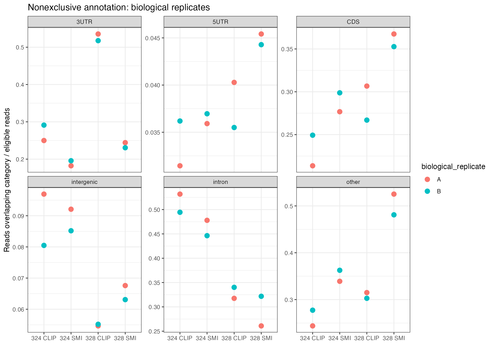
Mean fractional intron allocation is42.4% in324CLIP versus20.8% in328CLIP; corresponding SMI fractions are37.9% and19.8%. Thus much of this compositional difference is also present in the controls. Mean3′UTR allocation is18.9% versus39.0% in CLIP and11.8% versus14.9% in SMI. These are read-composition diagnostics, not estimates of numbers of bound peaks.
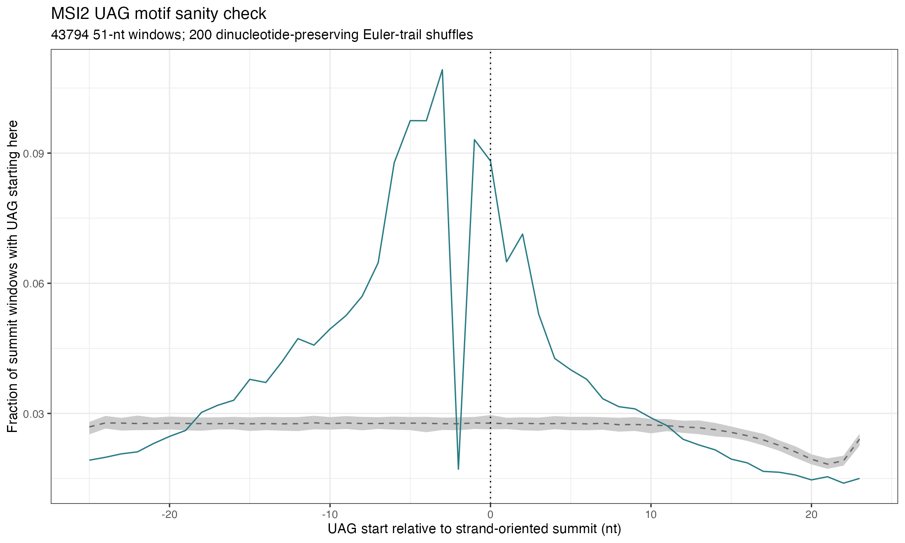
| zone | observed | expected | fold | null_low | null_high | empirical_p | N |
|---|---|---|---|---|---|---|---|
| all | 8.541e+04 | 5.7e+04 | 1.498 | 5.668e+04 | 5.734e+04 | 0.004975 | 4.379e+04 |
| central_motif_start_minus10_to10 | 5.469e+04 | 2.544e+04 | 2.15 | 2.52e+04 | 2.566e+04 | 0.004975 | 4.379e+04 |
| flanks | 3.072e+04 | 3.156e+04 | 0.9732 | 3.129e+04 | 3.186e+04 | 1 | 4.379e+04 |
Use the strand-oriented51nt genomic window centered on the highest-score source summit for each merged peak. All43,794 windows were valid. UAG is TAG in the DNA reference. The null preserves each window’s nucleotide and dinucleotide counts,length,first/last nucleotide and therefore its GC content/context. Randomized outgoing-edge order and an Euler trail generate200 sequence shuffles per window (seed260924); this is not claimed to sample all possible dinucleotide shuffles uniformly. The interval reflects randomization variability. The minimum attainable empirical p is1/201. Central enrichment with approximately neutral flanks supports a localized MSI2 motif positive control; it does not establish an isoform difference.
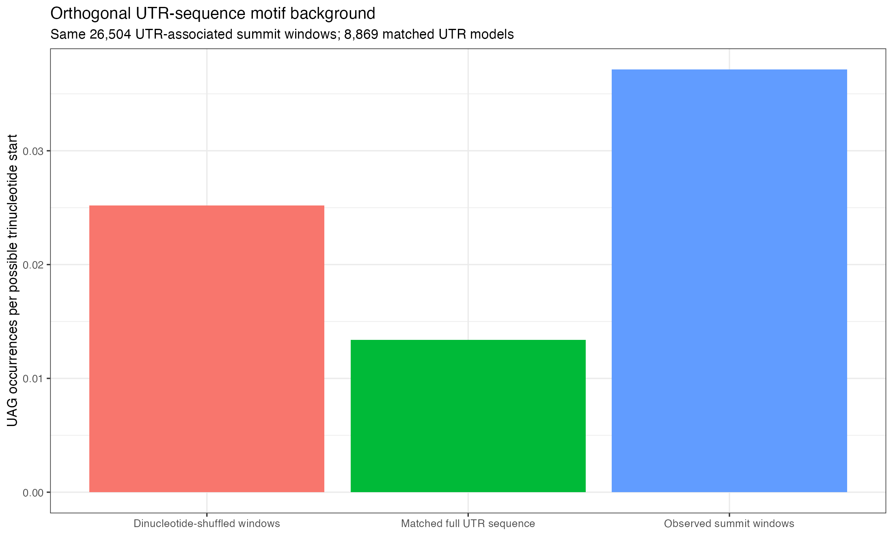
As an orthogonal ZFP36-style sequence-exposure check, the26,504 UTR-associated summit windows have2.78-fold more UAG per possible trinucleotide start than their full matched splicedUTRs. Each of8,869 UTR models is weighted by its assigned summit count. This adapts the paper’s UTR sequence background;it is an analytic comparison,not a PARpipe shuffle or a new permutation p-value. The maximum positional UAG frequency occurs at motif start−3nt,close to the inferred summit.
Inward profiles retain170,277 deduplicated introns at least2kb long. The donor and acceptor windows each contain the first1,000 intronic bases from their respective ends, in10nt bins. Distance0 is the boundary-adjacent intronic nucleotide, and distance increases into the intron for both sides. The windows do not overlap. Every bin has the same170,277-intron exposure; actual nonzero intron counts for every inward bin and library are saved alongside the fixed denominator. Nonzero peak counts by subsample and library are also retained.
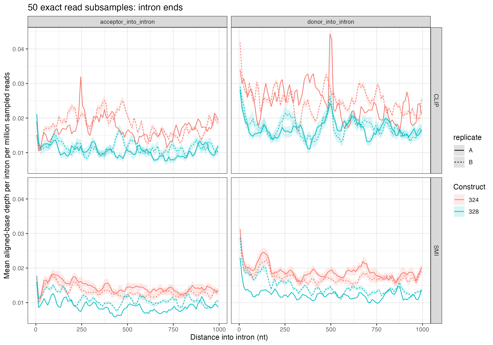
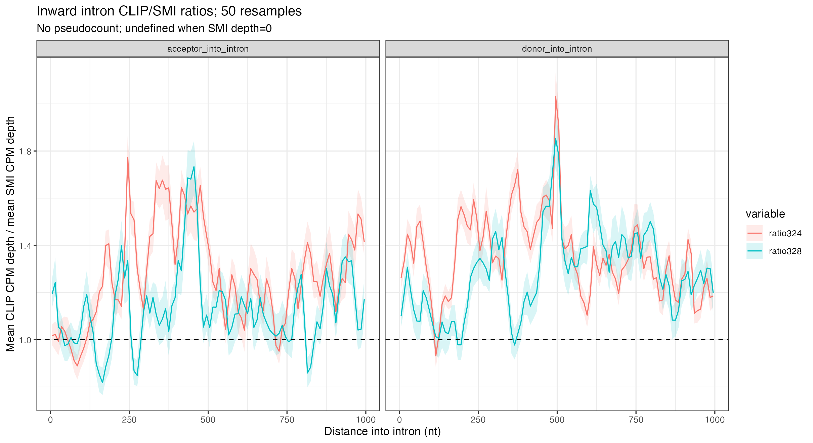
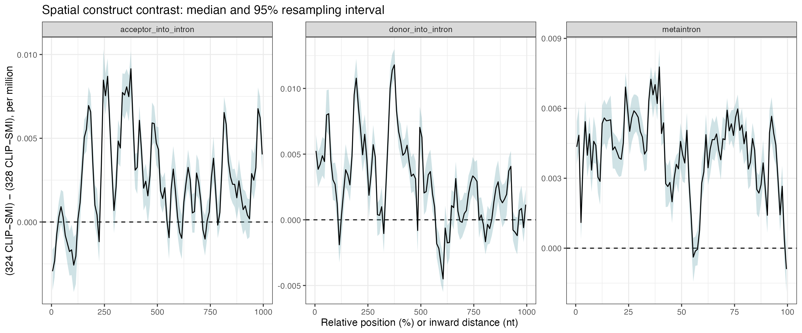
The existing round-two100-bin intron read metaprofiles are reused as the historical baseline. New sensitivities explicitly require length>=100nt (338,659 introns), stratify by annotation-wide length quartiles and preserve all library curves. Equal coefficients in a mean depth do not prevent high-depth introns from influencing the result, so a second analysis normalizes each supported intron to unit total bin-density before averaging. Zero-support introns cannot be shape-normalized and are reported separately rather than labeled bound. After equal-shape normalization, sharp end-bin peaks occur in bothCLIP andSMI and are strongest for short introns. They therefore cannot be interpreted as MSI2-specific localization without the assay contrast.
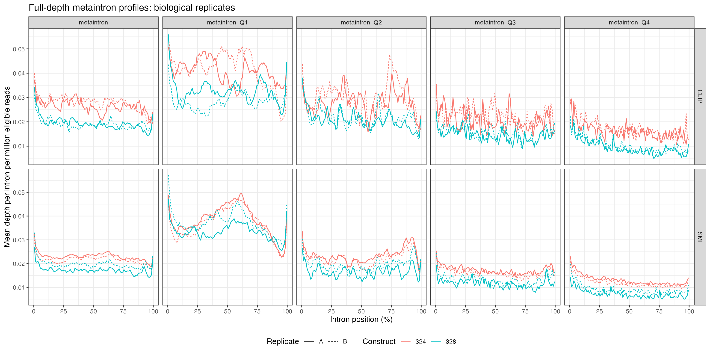
![Metaintron read-weighted sensitivity. Dataset/universe: All supported intron models>=100nt; N=338659 eligible; supported per library NM2026_0081:17408, NM2026_0082:30033, NM2026_0083:18204, NM2026_0084:39555, NM2026_0085:18636, NM2026_0086:84858, NM2026_0087:18447, NM2026_0088:77315. Counted unit: Aligned bases overlapping feature bins. Weighting: High-coverage/longer introns contribute more. Normalization/denominator/y-axis: Each bin aligned bases / all intron-feature aligned bases. Can differ from equal-intron shape.](figures/metaintron_read_weighted.png)
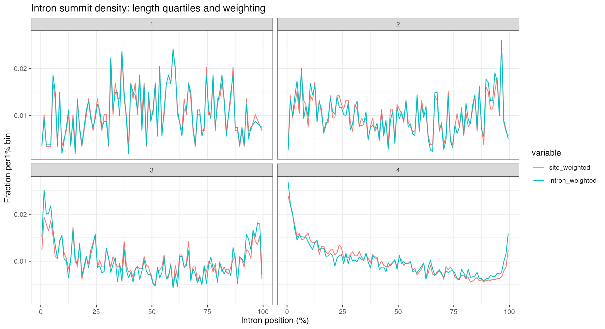
The reference summit analysis assigns each summit to one longest containing intron, separately from UTR assignment. It includes20,542 summits in9,732 selected introns out of338,659 eligible models. First10% contains16.73% of summits versus approximately10% under the matched null;last10% contains8.11%. This relative donor-side preference is broader than an exact junction spike. Per-intron paired zone tests, length-stratified summit tests, construct-by-boundary Fisher tests and read-weighted/equal-intron profiles are all saved; their small p-values reflect many correlated annotation units, not additional biological replicates.
The primary reference analysis contains26,504 summits assigned once to the longest matching spliced3′UTR model of at least100nt. Concatenation excludes intervening introns. The number of sites per selected model,length,strand and gene context remain fixed in500 uniform-position permutations (seed260925). The null does not match local mappability or nucleotide composition. Results are conditional on the chosen transcript models; some loci can be intronic in one transcript and UTR in another, so the intron and UTR analysis sets are not disjoint.
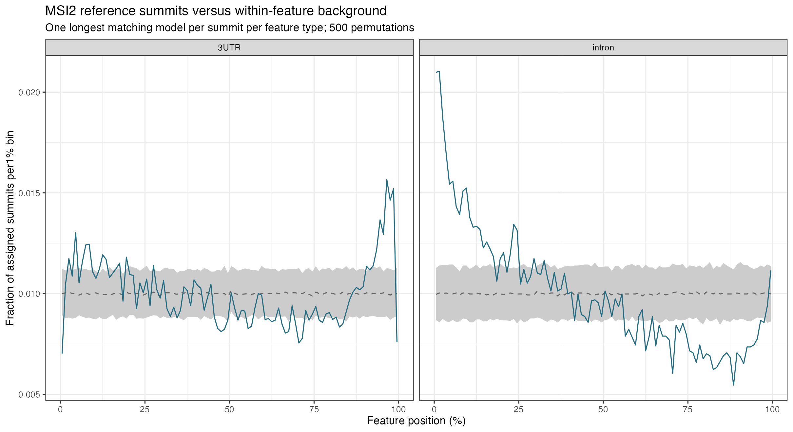
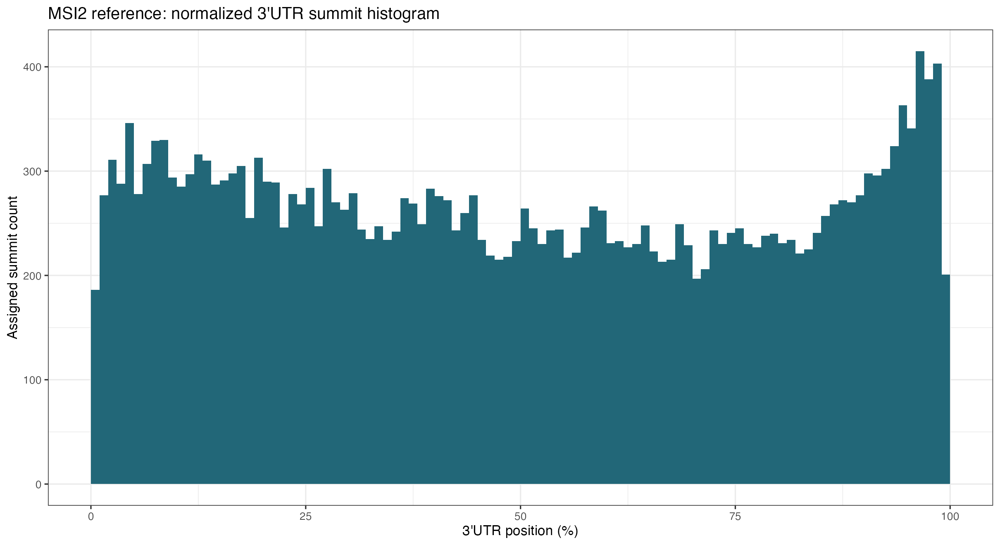
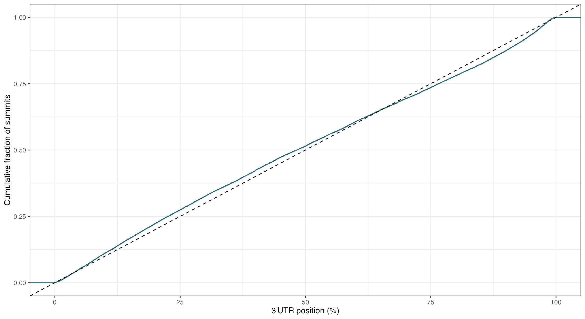
The last10% contains12.58% of sites (1.26-fold null) and the final100nt contains7.77% (1.41-fold null). The first10% is also modestly enriched at1.11-fold; the data do not imply exclusive distal binding. These reference-site results remain separate from the following secondary plots, which label counted peaks by the sign of their new raw-QN construct score.
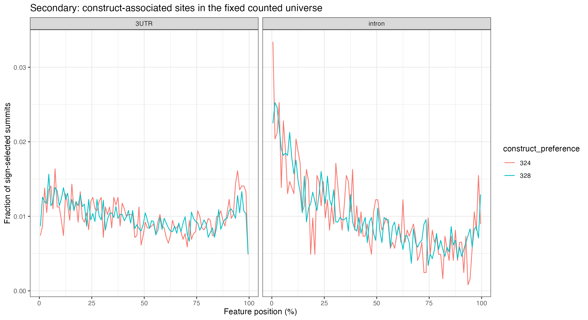
Mukherjee et al.2014 used the longest matching transcript feature and within-feature positional randomization. We inspected PARpipe commit79b1aab, including Spatial.pl,Spatial.R and annotate.pl. The spatial R function uses an implicit25nt footprint: sample(12.5:(L−12.5),1). We reproduce that grid exactly for500 draws on the current hg38/v26 models. We adapt the coordinate logic,not the historical preprocessing or annotation precedence; the old annotation code contains GENCODEv18/hg19 assumptions. No obsolete aligner or peak caller was run. This is a PARpipe spatial-randomization sensitivity,not a complete PARpipe analysis. No independent motif-shuffling method was identified in these spatial scripts. The paper’s fullUTR motif sequence background is separately adapted above;the primary UAG null remains the explicitly named dinucleotide shuffle.
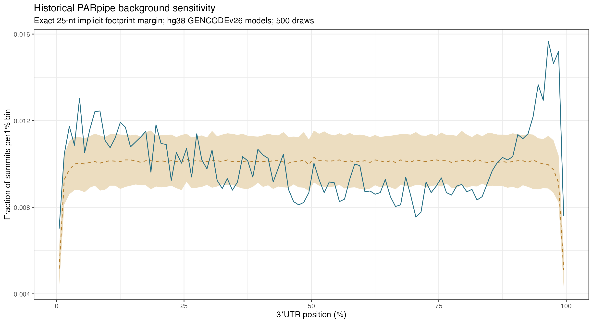
The historical margin changes the numerical null but preserves the direction of both the distal3′UTR and first-decile intron enrichment. It does not independently validate local sequence or mappability assumptions.
Detailed methods and interpretation · Data sources · Conversion QC. QKI/PUM2 are the exact archived Hafner2010 datasets; ELAVL1A metadata identifies Kishore2011 but does not resolve the library subset. All comparisons use287,085 donors and279,145 acceptors from the original MSI2 landmark file. Downloaded GENCODEv26 reproduces all338,659 existing introns of at least100nt exactly,with no coordinate differences.
| RBP | original_N | unmapped | split_or_multiple | width_QC_rejected | retained_N | percent_retained |
|---|---|---|---|---|---|---|
| QKI | 1.204e+04 | 14 | 1 | 0 | 1.202e+04 | 99.88 |
| PUM2 | 1.096e+04 | 14 | 0 | 1 | 1.095e+04 | 99.86 |
| ELAVL1 | 1.078e+04 | 2 | 6 | 0 | 1.077e+04 | 99.93 |
![MSI2=43,794 summit representatives;QKI=10,958,PUM2=10,027,ELAVL1=10,585 same-strand genic null-eligible hg38 peak centers. One nearest donor/acceptor per peak;10nt bins. Denominator=all null-eligible peaks for that RBP,including distant peaks. Y=observed fraction /mean fraction from500 same-gene/region-segment randomizations (seed260923);grey=95% null interval divided by null mean. Categories/segment,chromosome,strand,peak count and width are held fixed;GC/mappability are not matched. Donornegative/exonpositive/intron;acceptornegative/intronpositive/exon. Inherited acceptor0 is the last intronic nucleotide.](../external_rbp_splice_comparison/external_rbp_splice_comparison.png)
| RBP | acceptor_exon_proximal | acceptor_intron_proximal | donor_exon_proximal | donor_intron_proximal | donor_exon_intron_contrast | acceptor_exon_intron_contrast |
|---|---|---|---|---|---|---|
| ELAVL1 | 0.5189 | 2.634 | 0.8455 | 1.129 | 0.749 | 0.197 |
| MSI2 | 0.8382 | 0.7765 | 0.9213 | 1.102 | 0.8359 | 1.079 |
| PUM2 | 0.4049 | 0.8642 | 0.7477 | 1.209 | 0.6185 | 0.4686 |
| QKI | 0.5355 | 0.8016 | 0.7284 | 0.8919 | 0.8167 | 0.668 |
| RBP | boundary | window_nt | all_annotated_sites | sites_with_peak | fraction_sites_with_peak | all_peaks | peaks_near_site | fraction_peaks_near_site |
|---|---|---|---|---|---|---|---|---|
| MSI2 | donor | 50 | 2.871e+05 | 1192 | 0.004152 | 4.379e+04 | 1175 | 0.02683 |
| MSI2 | donor | 250 | 2.871e+05 | 4353 | 0.01516 | 4.379e+04 | 4221 | 0.09638 |
| MSI2 | acceptor | 50 | 2.791e+05 | 1249 | 0.004474 | 4.379e+04 | 1217 | 0.02779 |
| MSI2 | acceptor | 250 | 2.791e+05 | 6002 | 0.0215 | 4.379e+04 | 5944 | 0.1357 |
| QKI | donor | 50 | 2.871e+05 | 180 | 0.000627 | 1.202e+04 | 178 | 0.01481 |
| QKI | donor | 250 | 2.871e+05 | 1033 | 0.003598 | 1.202e+04 | 935 | 0.07779 |
| QKI | acceptor | 50 | 2.791e+05 | 151 | 0.0005409 | 1.202e+04 | 144 | 0.01198 |
| QKI | acceptor | 250 | 2.791e+05 | 1149 | 0.004116 | 1.202e+04 | 1022 | 0.08502 |
| PUM2 | donor | 50 | 2.871e+05 | 137 | 0.0004772 | 1.095e+04 | 132 | 0.01206 |
| PUM2 | donor | 250 | 2.871e+05 | 553 | 0.001926 | 1.095e+04 | 528 | 0.04823 |
| PUM2 | acceptor | 50 | 2.791e+05 | 112 | 0.0004012 | 1.095e+04 | 110 | 0.01005 |
| PUM2 | acceptor | 250 | 2.791e+05 | 1043 | 0.003736 | 1.095e+04 | 1035 | 0.09455 |
| ELAVL1 | donor | 50 | 2.871e+05 | 193 | 0.0006723 | 1.077e+04 | 190 | 0.01764 |
| ELAVL1 | donor | 250 | 2.871e+05 | 757 | 0.002637 | 1.077e+04 | 727 | 0.0675 |
| ELAVL1 | acceptor | 50 | 2.791e+05 | 274 | 0.0009816 | 1.077e+04 | 260 | 0.02414 |
| ELAVL1 | acceptor | 250 | 2.791e+05 | 1315 | 0.004711 | 1.077e+04 | 1298 | 0.1205 |
The same reference MSI2 called peaks are not strongly enriched at the read-derived donor[−10,0) or acceptor[0,20) extrema. Broad exon-side50nt windows are0.92-fold donor and0.84-fold acceptor. MSI2 has some broader similarity toQKI (descriptive correlation0.43/0.48),but not a compelling exact-boundary enrichment. PUM2 andELAVL1 differ;ELAVL1 has an intron-side acceptor feature. All sets show some immediate-boundary depletion,consistent with potential cluster-width/annotation/protocol contributions. This does not prove a general artifact, nor establish MSI2-specific splice regulation.
Low overall splice-site occupancy is not unusual: MSI2 occupies1.52% of annotated donors within250nt,whileQKI occupies0.36%. Because peak-set sizes differ,also compare fractions of peaks:9.64% of MSI2 and7.78% ofQKI peaks are within250nt of a donor. Both denominators are reported rather than comparing raw peak counts alone.
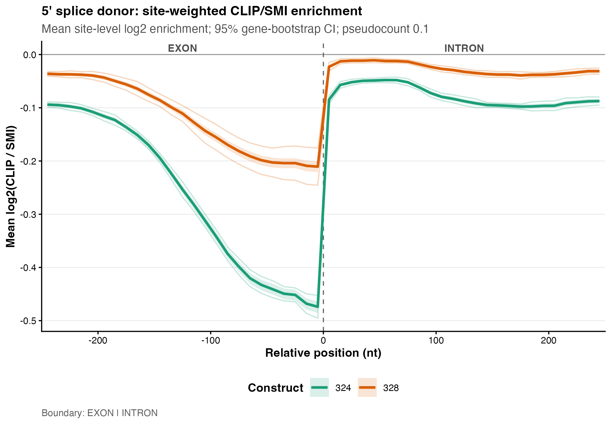
Original first-pass methods and the registry retain the original site-weighted/read-weighted variants and their exact denominators. A strong read-coverage feature with weak called-site localization must remain a coverage observation.
The overall328-favoring fixed-peak score survives both quantile-normalization orders and repeated equal-depth sensitivity. Its magnitude and the regional contrast are method-sensitive,with sparse ties particularly important. The fraction of reads allocated to introns differs between constructs but also differs in SMI,so it is not equivalent to preferential CLIP binding. UAG enrichment is a clear localized specificity check. Relative intron andUTR spatial biases are detectable,whereas the exact exon-side read-profile extrema are weak in called-peak space. These conclusions concern binding localization and normalization robustness,not proof of splicing regulation.
| Analysis | Universe | Unit | Weighting | Normalization | Main_result | Construct_direction | Spatial_conclusion |
|---|---|---|---|---|---|---|---|
| Original continuous16k | 16046 fixed counted peaks | Peak | Each peak;means of two replicates | Full mappedCPM;log2((meanCLIP+0.5)/(meanSMI+0.5));DD324-328 | MedianDD=-2.246 | 328 overall | 3UTR more328-biased than intron |
| CPM/log/quantile | Same16046 | Peak | Each peak;mean transformed replicates | CPM ->log2(CPM+0.5)->QN | MedianDD=-0.971;92.85% sign agreement | 328 overall | Regional contrast attenuated |
| Exact raw-count quantile | Fixed16046 counted peaks | Peak | Each peak equally;two replicates per assay | log2(raw count+0.5),preprocessCore QN across8; mean CLIP-mean SMI;DD324-328 | MedianDD=-0.5777;92.63% sign agreement with original | 328 overall | 3UTR-intron median difference=-0.1842;Cliff=-0.1203 |
| 50 exact read-depth subsamples | Same16046 peaks; all eligible round2 BAM-record exports | Whole aligned record before peak counting | Without replacement;read can count in multiple peaks;replicates retained | CLIP93659,SMI257457 each;CPM within assay;log2 ratio of meanCPM+0.5;DD324-328 | All region medians328-favoring in98-100% of draws | 328 overall | Spatial curves retain resampling variability |
| Fractional aligned-read annotation | All8 original eligible libraries | Aligned read with M/= /X blocks | Each read weight1 divided among distinct overlapping categories | Fractional count / library eligible records | 324CLIP has42.4% intron vs328CLIP20.8%;3UTR18.9% vs39.0% | Different composition;not equivalent to peakDD | No peak calling needed |
| UAG summit validation | All43794 reference merged peaks | 51nt summit window;exact TAG start | Each summit equally | 200 within-window dinucleotide-preserving randomized Euler trails | 1.50x overall;2.15x central;flanks0.97x | No isoform test | Central UAG enrichment |
| Intron inward coverage | GENCODEv26 introns>=2000nt | Aligned bases in10nt bins | Equal intron mean depth,including zero-support;replicates separate | Per million eligible reads;50 assay-matched exact subsamples | Both ends oriented into intron;170277 disjoint eligible introns | Position-dependent;see CLIP and SMI separately | Avoids double counting short introns |
| Intron inward CLIP/SMI | Same170277 introns | Mean aligned-base depth | Mean of two CLIP and two SMI biological replicates separately | CLIP CPM depth/SMI CPM depth;no pseudocount;undefined ifSMI0 | 50-draw uncertainty separates assay contributions | Position-dependent | Ratio complements additive difference |
| Spatial additive construct contrast | Introns>=100nt;inward subset>=2000nt | Per-intron aligned-base depth | Equal valid intron weighting | (324CLIP-SMI)-(328CLIP-SMI) per million;50 subsamples | A read-coverage contrast,not peak binding probability | Position-dependent | Median/bands for scaled and inward profiles |
| Metaintron depth/length sensitivity | GENCODEv26 introns>=100nt | Aligned-base depth in100 floor-edge bins | Equal feature coefficients;high-depth introns can still influence means | Per million library eligible reads;all and length quartiles | Reuses round2 concept;new explicit>=100nt and quartile versions | See replicate curves | Does not infer binding from nonzero coverage |
| Metaintron equal-shape read analysis | Supported introns>=100nt;separate per library | Within-intron normalized bin-depth fraction | Every supported intron total weight1;zeros excluded and reported | Normalize100-bin density to unit total per intron;average | Boundary spikes occur in CLIP and SMI, strongest in short introns | Shape comparison only | Boundary tests and length quartiles retained |
| Metaintron read-weighted sensitivity | All supported intron models>=100nt | Aligned bases overlapping feature bins | High-coverage/longer introns contribute more | Each bin aligned bases / all intron-feature aligned bases | Can differ from equal-intron shape | Shape comparison only | Read can contribute to multiple annotation models |
| Metaintron summit distribution | Reference summits in introns>=100nt | One summit per longest matching intron | Site-weighted and equal supported-intron sensitivity | 100 relative bins;500 within-model draws | First10%16.73% vs10% null (1.67x);last10%8.11% | No construct inference in reference set | Donor-side relative-position bias;not exact splice peak |
| Normalized reference3UTR summits | Reference summit in spliced3UTR>=100nt | One summit per longest matching UTR chain | Each summit once;context counts fixed | 500 uniform integer positions in same UTR;100bins | Last10%12.58% (1.26x);last100nt7.77% (1.41x) | No construct inference in reference set | Modest distal preference |
| PARpipe spatial-background sensitivity | Same eligible intron andUTR summit assignments | Randomized summit position | One draw per assigned site;model lengths/counts retained | Exact half-integer grid12.5:(L-12.5);500 iterations | UTR last10%1.33x;last100nt1.55x;agrees in direction | No isoform test | DistalUTR and proximal-intron conclusions survive |
| Secondary construct-associated spatial sites | Fixed16046 universe intersected with each feature type | Summit selected by raw-QN DD sign | Each sign-selected summit once | Separate within-group fraction per1% bin | Descriptive sign-selected sites;not independent endogenous samples | Labels reflect sign selection | Kept separate from reference-site primary |
| UTR sequence motif-background sensitivity | Same26504 UTR-associated summit windows | UAG occurrence per possible3mer start | Matched UTR models weighted by assigned summit count | Observed51nt windows vs full spliced-UTR sequence exposure | 2.78-fold over fullUTR sequence background | No isoform test | UAG specificity survives orthogonal sequence background |
| Original landmark site-weighted | Condition-independent supported landmarks | Annotated site/bin read overlap | Equal site | Existing paired library-normalized log enrichment | Sparse exact-boundary features;existing result reused | Position and denominator dependent | Coverage does not establish peak binding |
| Original landmark read-weighted | Same supported landmarks | Summed bin read overlap | Read-weighted | Existing aggregated normalized CLIP/SMI | Dominated more by high-count sites | Position and denominator dependent | Read and site weighting answer different questions |
| Endogenous/reference peak controls | 43794 MSI2 reference peaks | Summit | Equal peak | Matched500-permutation O/E | Weak exact exon-side peak enrichment | Not a construct comparison | Do not equate read-profile extrema with preferred binding sites |
Tables preserve biological samplesA/B and individual iterations wherever available. Permutation/subsampling bands quantify algorithmic resampling,not biological confidence intervals. Most feature/peak tests are exploratory and do not correct gene/transcript dependence. Source provenance is incomplete for the MSI2 reference and for the preciseELAVL1A library subset. The read exports are aligned-record data,not raw FASTQ;UMI/insert collapsing and mapping filters occurred upstream. Round-two memberships contain ambiguous annotation overlaps and do not establish whole-read transcript compatibility.
54 structural/numerical checks plus exact annotation reconciliation verify fixed IDs,read weight conservation,shape mass and liftover accounting. Reconstructed count QC documents the deliberate read-overlap counting distinction. All figures link toPNG;matchingPDFs and plotting inputs are saved. Rebuild instructions identify scripts,reference sources and seeds.
| path | caption |
|---|---|
| output/followup_analysis/raw_count_quantile/continuous_delta_delta_by_region.png | Exact raw-count quantile. Dataset/universe: Fixed16046 counted peaks; N=16046. Counted unit: Peak. Weighting: Each peak equally;two replicates per assay. Normalization/denominator/y-axis: log2(raw count+0.5),preprocessCore QN across8; mean CLIP-mean SMI;DD324-328. MedianDD=-0.5777;92.63% sign agreement with original. |
| output/followup_analysis/figures/region_intron_effects.png | Same16046 peak universe and raw-count QN. Each point is Cliff’s delta against the934 intron peaks; positive means more324-favoring relative to intron. Regions with at least20 peaks are tested. Peak-level exploratory Wilcoxon/KS tests do not account for gene-level dependence; BH spans the displayed comparisons. |
| output/followup_analysis/figures/all_region_density.png | Fixed16046 peaks;raw-count log2+0.5 then QN;one weight per peak. Curves are normalized within each region: probability density or cumulative fraction of324-minus328 delta-delta. No directional selection. |
| output/followup_analysis/figures/all_region_ecdf.png | Fixed16046 peaks;raw-count log2+0.5 then QN;one weight per peak. Curves are normalized within each region: probability density or cumulative fraction of324-minus328 delta-delta. No directional selection. |
| output/followup_analysis/figures/downsampling_regions.png | 50 exact read-depth subsamples. Dataset/universe: Same16046 peaks; all eligible round2 BAM-record exports; N=16046. Counted unit: Whole aligned record before peak counting. Weighting: Without replacement;read can count in multiple peaks;replicates retained. Normalization/denominator/y-axis: CLIP93659,SMI257457 each;CPM within assay;log2 ratio of meanCPM+0.5;DD324-328. All region medians328-favoring in98-100% of draws. |
| output/followup_analysis/figures/read_fractional_annotation.png | Fractional aligned-read annotation. Dataset/universe: All8 original eligible libraries; N=2180719. Counted unit: Aligned read with M/= /X blocks. Weighting: Each read weight1 divided among distinct overlapping categories. Normalization/denominator/y-axis: Fractional count / library eligible records. 324CLIP has42.4% intron vs328CLIP20.8%;3UTR18.9% vs39.0%. |
| output/followup_analysis/figures/read_nonexclusive_annotation.png | All eight eligible libraries;per-library N in depth table. Numerator: aligned records with at least one block overlapping the category. Denominator: all eligible records in that library. A read may count in several categories;fractions need not sum to1. Points show biological replicatesA andB. |
| output/followup_analysis/figures/UAG_summit_frequency.png | UAG summit validation. Dataset/universe: All43794 reference merged peaks; N=43794. Counted unit: 51nt summit window;exact TAG start. Weighting: Each summit equally. Normalization/denominator/y-axis: 200 within-window dinucleotide-preserving randomized Euler trails. 1.50x overall;2.15x central;flanks0.97x. |
| output/followup_analysis/figures/UAG_UTR_background.png | UTR sequence motif-background sensitivity. Dataset/universe: Same26504 UTR-associated summit windows; N=26504. Counted unit: UAG occurrence per possible3mer start. Weighting: Matched UTR models weighted by assigned summit count. Normalization/denominator/y-axis: Observed51nt windows vs full spliced-UTR sequence exposure. 2.78-fold over fullUTR sequence background. |
| output/followup_analysis/figures/intron_inward_resampling.png | Intron inward coverage. Dataset/universe: GENCODEv26 introns>=2000nt; N=170277. Counted unit: Aligned bases in10nt bins. Weighting: Equal intron mean depth,including zero-support;replicates separate. Normalization/denominator/y-axis: Per million eligible reads;50 assay-matched exact subsamples. Both ends oriented into intron;170277 disjoint eligible introns. |
| output/followup_analysis/figures/intron_inward_ratio.png | Intron inward CLIP/SMI. Dataset/universe: Same170277 introns; N=170277. Counted unit: Mean aligned-base depth. Weighting: Mean of two CLIP and two SMI biological replicates separately. Normalization/denominator/y-axis: CLIP CPM depth/SMI CPM depth;no pseudocount;undefined ifSMI0. 50-draw uncertainty separates assay contributions. |
| output/followup_analysis/figures/spatial_construct_sensitivity.png | Spatial additive construct contrast. Dataset/universe: Introns>=100nt;inward subset>=2000nt; N=338659. Counted unit: Per-intron aligned-base depth. Weighting: Equal valid intron weighting. Normalization/denominator/y-axis: (324CLIP-SMI)-(328CLIP-SMI) per million;50 subsamples. A read-coverage contrast,not peak binding probability. |
| output/followup_analysis/figures/metaintron_read_quartiles.png | Metaintron depth/length sensitivity. Dataset/universe: GENCODEv26 introns>=100nt; N=338659. Counted unit: Aligned-base depth in100 floor-edge bins. Weighting: Equal feature coefficients;high-depth introns can still influence means. Normalization/denominator/y-axis: Per million library eligible reads;all and length quartiles. Reuses round2 concept;new explicit>=100nt and quartile versions. |
| output/followup_analysis/figures/metaintron_equal_shape.png | Metaintron equal-shape read analysis. Dataset/universe: Supported introns>=100nt;separate per library; N=338659 eligible; supported per library NM2026_0081:17408, NM2026_0082:30033, NM2026_0083:18204, NM2026_0084:39555, NM2026_0085:18636, NM2026_0086:84858, NM2026_0087:18447, NM2026_0088:77315. Counted unit: Within-intron normalized bin-depth fraction. Weighting: Every supported intron total weight1;zeros excluded and reported. Normalization/denominator/y-axis: Normalize100-bin density to unit total per intron;average. Boundary spikes occur in CLIP and SMI, strongest in short introns. |
| output/followup_analysis/figures/metaintron_read_weighted.png | Metaintron read-weighted sensitivity. Dataset/universe: All supported intron models>=100nt; N=338659 eligible; supported per library NM2026_0081:17408, NM2026_0082:30033, NM2026_0083:18204, NM2026_0084:39555, NM2026_0085:18636, NM2026_0086:84858, NM2026_0087:18447, NM2026_0088:77315. Counted unit: Aligned bases overlapping feature bins. Weighting: High-coverage/longer introns contribute more. Normalization/denominator/y-axis: Each bin aligned bases / all intron-feature aligned bases. Can differ from equal-intron shape. |
| output/followup_analysis/figures/metaintron_site_weighting.png | Metaintron summit distribution. Dataset/universe: Reference summits in introns>=100nt; N=20542. Counted unit: One summit per longest matching intron. Weighting: Site-weighted and equal supported-intron sensitivity. Normalization/denominator/y-axis: 100 relative bins;500 within-model draws. First10%16.73% vs10% null (1.67x);last10%8.11%. |
| output/followup_analysis/figures/summit_spatial_background.png | Normalized reference3UTR summits. Dataset/universe: Reference summit in spliced3UTR>=100nt; N=26504. Counted unit: One summit per longest matching UTR chain. Weighting: Each summit once;context counts fixed. Normalization/denominator/y-axis: 500 uniform integer positions in same UTR;100bins. Last10%12.58% (1.26x);last100nt7.77% (1.41x). |
| output/followup_analysis/figures/UTR_summit_histogram.png | Same26,504 reference summits in eligible spliced3′UTRs. One site weight each. Histogram y-axis=count per1% bin;ECDF y-axis=cumulative fraction,with uniform reference diagonal. Denominator for fractions is26,504;not construct libraries. |
| output/followup_analysis/figures/UTR_summit_ECDF.png | Same26,504 reference summits in eligible spliced3′UTRs. One site weight each. Histogram y-axis=count per1% bin;ECDF y-axis=cumulative fraction,with uniform reference diagonal. Denominator for fractions is26,504;not construct libraries. |
| output/followup_analysis/figures/construct_summit_spatial.png | Secondary construct-associated spatial sites. Dataset/universe: Fixed16046 universe intersected with each feature type; N=See table. Counted unit: Summit selected by raw-QN DD sign. Weighting: Each sign-selected summit once. Normalization/denominator/y-axis: Separate within-group fraction per1% bin. Descriptive sign-selected sites;not independent endogenous samples. |
| output/followup_analysis/figures/PARpipe_UTR_background.png | PARpipe spatial-background sensitivity. Dataset/universe: Same eligible intron andUTR summit assignments; N=26504. Counted unit: Randomized summit position. Weighting: One draw per assigned site;model lengths/counts retained. Normalization/denominator/y-axis: Exact half-integer grid12.5:(L-12.5);500 iterations. UTR last10%1.33x;last100nt1.55x;agrees in direction. |
| output/external_rbp_splice_comparison/external_rbp_splice_comparison.png | MSI2=43,794 summit representatives;QKI=10,958,PUM2=10,027,ELAVL1=10,585 same-strand genic null-eligible hg38 peak centers. One nearest donor/acceptor per peak;10nt bins. Denominator=all null-eligible peaks for that RBP,including distant peaks. Y=observed fraction /mean fraction from500 same-gene/region-segment randomizations (seed260923);grey=95% null interval divided by null mean. Categories/segment,chromosome,strand,peak count and width are held fixed;GC/mappability are not matched. Donornegative/exonpositive/intron;acceptornegative/intronpositive/exon. Inherited acceptor0 is the last intronic nucleotide. |
| output/splicing_first_pass/figures/donors/site_weighted_enrichment_metaprofile.png | Reused original MSI2 donor read result:101162 condition-independent supported donors;all other donors excluded. Each retained site weighted equally,including zero bins. Counts divided by within-construct full-library factors (depth/geometric mean). Per-pair log2((CLIP+0.1)/(SMI+0.1)) then mean of two pairs;95% bands from1000 primary-gene bootstrap draws,seed328324. Y=mean site log enrichment;denominator101162 sites. This is not called-site O/E. |